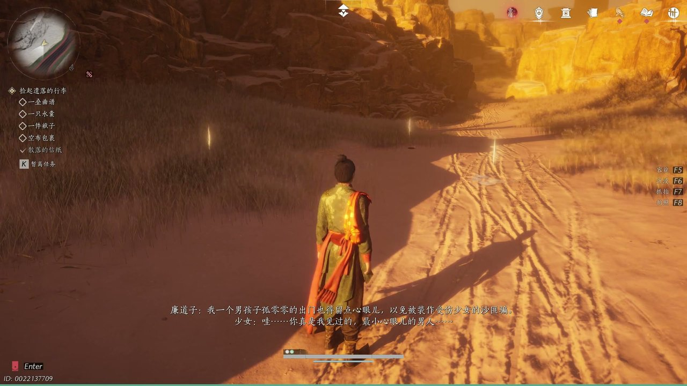

燕云背后的故事：第10集 第十集 沙海

朋友们，我知道好些朋友都是从短视频或者游戏广告里刷过《燕云十六声》，那些漫天黄沙和绝望呐喊瞬间就能勾起大家的记忆。这是一款五代十国末年的开放世界武侠游戏，最特别的地方在于它用群像视角重构了乱世边缘人的悲歌与求生欲。今天咱们就走进西域戈壁这片被遗忘的角落，看看在长安朝廷早已不管闲事的荒凉之地，一群流亡者是如何挣扎求存的。那个身负密信前往凉州的游侠头一回遇上沙匪暗算吊于枯树之上，生死一线间还得靠一位神秘女子搭救，这趟西行之路怕是要出大乱子了！

烈日当空的西域戈壁，风沙裹挟着枯死的植被发出凄厉的摩擦声。一名满身血污的男子瘫倒在滚烫的沙地上，他怀里空空荡荡，那个伴随他一路奔波、装着通往长安唯一希望的布袋子早已不知去向。“布袋子丢了……老天爷不叫咱们回去喽！”男子精神崩溃，对着苍穹嘶吼，认为天意绝了自己返乡的路途。路过的沙漠本地人发现了他奄奄一息的模样，急忙上前搀扶：“老哥你醒醒，座山雕没把你啄了算咱运气好。”众人试图在流沙中搜寻那只丢失的布袋子，却被深埋的沙粒阻挡，最终一无所获。“找不回来了……"绝望像瘟疫一样蔓延，男子看着那漫无边际的黄沙，觉得自己的命比草芥还不如，彻底陷入了对天命的无力反抗之中。
男人被搀扶着踉跄前行，来到一处由人工古井环绕的聚居地。这里二十户人家世代在黄沙中一筐筐挖土掘井，祖辈一辈子都没喝过一口从这深井里打出来的水。“咱们这一家子人，从我爷爷那辈起就在这儿刨食。”老者指着身旁刚被寻回的布袋子说道，“你看，就算老天爷不给活路，咱也得跟这天命争上一争。”众人围在石块后方，将那只差点就被流沙吞没的布袋子重新系回男子腰间。祖孙三代的神情坚毅而苍凉，他们用世代坚守的执念开导着陷入绝望的男子：一筐又一筐挖出来的土堆成了井壁，这口枯井里藏着的是活人对命运的倔强抗争。虽然没能找回更多东西，但那种“只要还有一口气就在争”的精神让男子重新站了起来。

转过沙丘隘口，一阵凄厉的哭声打破了死寂。数名衣衫褴褛、满脸尘土的男子正跪倒在地，哭诉着龙溪道全境兵匪横行的大祸。“长安早就烂在根里了！”逃兵刘三儿指着远处的城门残垣吼道，“守城的军爷把我们骗出去后转头就把我们杀光了。”流民们互相猜忌提防，眼神中透着劫后的惊恐与麻木。他们一心想要回到那个早已名存实亡的长安故土，却深知那里的大唐中枢连自救都成问题，更别提管辖边关疆土了。“咱们现在就是丧家之犬！”有人嘶吼着，手中的木棍直指旁边的同伴，“回不去啊！这路就没个头！”大家挤成一团却又各自孤立无援，随时面临被劫掠与杀戮的命运，仿佛置身于人间炼狱之中。

来到荒漠边关一处早已残破的旧营隘口时，异象突起，空气中浮现出全数覆亡的安西军将士英魂阵列。那些身披铠甲的身影依次自报所属编制：“俺是第三阵！”“我是四十二镇！”宣告着不死不退的戍边誓言。“将军……您已经死了。”主将的声音回荡在风沙中，悲壮而决绝。他知道本部人马早已尽数战死，却仍将长安带来的节杖信物郑重托付给途经此地的游侠：“把这个拿去凉州转送长安，问问那帮老东西还记得咱们吗？”英魂化作光点消散前留下一句低语：“安西军在阵在。”这串悲鸣将历史典故与现实乱世紧紧串联，生者带着死者的遗志继续前行，而那份关于家国记忆的沉重信物也正式踏上了未知的旅途。

承接嘱托的游侠孤身赶路不久后便遭遇沙匪截杀，财物尽失后被歹徒粗暴地吊在一棵枯树上当作诱饵等待后续路人。此时正值正午，烈日暴晒下秃鹫盘旋低空，啃食着他行囊中仅剩的大半干粮与包裹，“这年头这么乱，冰也好肥也好到处都是”，游侠重伤濒死之际眼前发黑。一名独自穿行沙漠的女子路过此地，发现了被困在树上的陌生男子。“别急着断气啊！”女子一边说着一边伸手去解绳索，她坦言自己熟知整片沙漠所有路线且拥有一匹骆驼可代步，“只要你愿意跟我走，咱们就能活。”然而游侠对这位来历不明的女子心存戒备，担心她是杀匪的伪装或另有图谋。
这一集看下来，我最大的感受就是这片沙漠真是吃人不吐骨头，连死人开口说话都比活人更有戏份儿。上一集里我们只知道主角少东家还在清河受着寒姨的气；到了这一集，安西军残魂列阵、逃兵流民哭诉归途无望成了新悬念，还多了个神秘女向导和那袋不知送给何人的密信。那个须发全白的神秘老者到底是谁？三次特别的月亮究竟意味着什么？长安朝廷真的还记得这些死去的安西旧部吗？把这些线头收拢到下一集的开坛宴那场大戏来，到时候主角少东家怕是也要卷入西域的腥风血雨了。目前这游侠和女向导还在赶路呢。大家觉得这对搭档能顺利走到长安吗？那个节杖信物会不会引来更大的祸端？赶紧评论区聊聊你的猜测，点个关注别错过下集更精彩的大事件！
关于我们
📱 公众号名称：三天游戏
✍️ 作者：曾三天
扫码关注公众号，获取每日最新资讯

商务合作与版权
商务合作 / 内容投稿 / 品牌推广
请关注公众号「三天游戏」后台留言联系
版权声明：本文由作者整理，转载需注明出处。